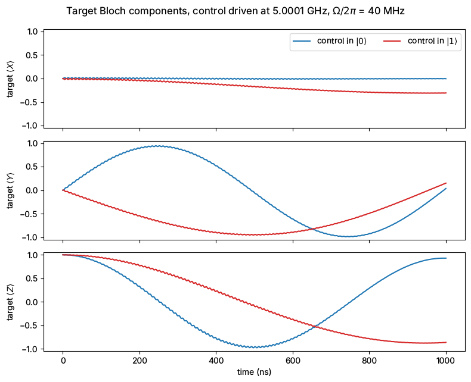
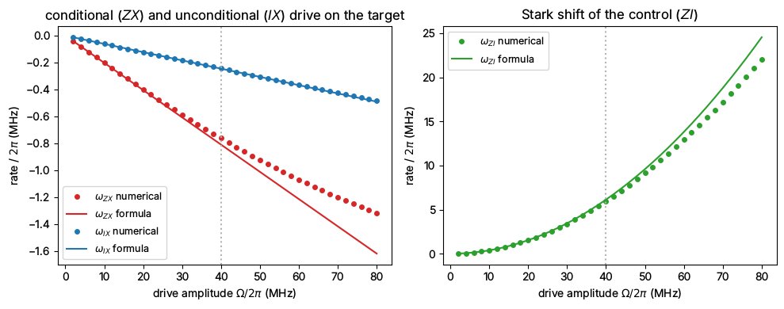

Note
This page was generated from tut/4-Analysis/Design-and-Simulation-of-a-Cross-Resonance-Gate.ipynb.
The Cross Resonance (CR) Gate¶
💡 What you need. The simulation (sections 1–5) needs only QuTiP, NumPy and matplotlib and runs in a few seconds. The physical design (section 6) opens the desktop
MetalGUI; see the callout below for running it without Qt.
💡 Using this tutorial without the Qt GUI
This tutorial uses the desktop
MetalGUI. To follow along on Colab, Binder, JupyterHub, or any environment where Qt isn’t available, replace any ``gui.rebuild()`` / ``gui.screenshot()`` call with ``qm.view(design)`` — it renders the design to a matplotlibFigureyou can display inline or save withfig.savefig(...).See 1.1 Quick start for a complete runnable walkthrough and
`docs/headless-usage.rst<https://qiskit-community.github.io/qiskit-metal/headless-usage.html>`__ for the full reference.
Here’s what we’ll work through in this tutorial notebook:
what the cross-resonance (CR) gate is, and why it is conditional;
a model of two coupled transmons (three levels each) with the control driven at the dressed frequency of the target;
the time evolution of the target qubit for the control in \(|0\rangle\) and in \(|1\rangle\): the target rotates at two different rates;
the effective \(ZX\), \(IX\) and \(ZI\) rates, extracted numerically and compared with the standard perturbative formulas;
a physical layout of the two qubits and their bus in Qiskit Metal.
1. What is the CR gate?¶
The cross-resonance gate couples two fixed-frequency qubits with microwaves alone. The two transmons are coupled, here through a bus resonator. One of them, the control, is driven at the transition frequency of the other, the target. The drive is off-resonant for the control, but through the coupling a small part of it reaches the target and makes it Rabi-oscillate.
The point of the gate is that the size of that leaked drive depends on the state of the control. The control’s \(|0\rangle\to|1\rangle\) and \(|1\rangle\to|2\rangle\) transitions both hybridise with the target, by different amounts. So the target rotates about \(X\) at one rate when the control is in \(|0\rangle\) and at another when it is in \(|1\rangle\). The difference is a \(Z\otimes X\) (”\(ZX\)”) interaction, and a \(ZX\) rotation by \(\pi/2\) is equivalent to a CNOT up to single-qubit gates.
2. The model¶
We use the Hamiltonian of two Duffing oscillators (transmons) with an exchange coupling \(J\), and a drive on the control (qubit 1):
A few choices are worth spelling out.
Three levels per transmon. The control’s second excited state is not a detail. It sets both the size of \(ZX\) and the size of the unwanted \(IX\) term (section 4). Two-level qubits would give a different answer.
A direct :math:`J` instead of the bus. The bus in section 6 is a \(\lambda/2\) resonator about 0.75 GHz above the qubits, coupled to each with \(g \approx 45\) MHz. Since \(g \ll |\omega_k - \omega_r|\), the bus stays in its ground state, and eliminating it gives an exchange coupling between the qubits [6]
\[J = \frac{g_1 g_2}{2}\Big(\frac{1}{\omega_1-\omega_r} + \frac{1}{\omega_2-\omega_r}\Big).\]We check in section 5 that keeping the bus explicitly gives the same rates.
The rotating frame. In a frame rotating at the drive frequency \(\omega_d\) for both transmons, and dropping terms that oscillate at \(2\omega_d\) (the rotating-wave approximation), the Hamiltonian becomes time independent:
\[\frac{\tilde H}{\hbar} = \sum_k\Big[(\omega_k-\omega_d)\, b_k^\dagger b_k + \frac{\alpha_k}{2}\, b_k^\dagger b_k^\dagger b_k b_k\Big] + J\big(b_1^\dagger b_2 + b_1 b_2^\dagger\big) + \frac{\Omega}{2}\big(b_1 + b_1^\dagger\big).\]All the Bloch vectors below are in this frame.
The numbers are representative of fixed-frequency transmons; tutorials 4.0x and 4.1x show how to get them for a real layout. Frequencies are in GHz and times in ns, so we multiply by \(2\pi\) when building Hamiltonians.
[1]:
import matplotlib.pyplot as plt
import numpy as np
import qutip as qt
TWO_PI = 2 * np.pi
N = 3 # levels kept per transmon
w1, w2 = 4.90, 5.00 # control and target frequencies (GHz)
alpha1, alpha2 = -0.33, -0.33 # anharmonicities (GHz)
Delta = w1 - w2 # control-target detuning (GHz)
# The bus of section 6: a 10.5 mm half-wave CPW on silicon.
eps_eff = (11.45 + 1) / 2 # quasi-static effective permittivity of a CPW on Si
wr = 299792458 / (2 * 10.5e-3 * np.sqrt(eps_eff)) / 1e9 # bus frequency (GHz)
g = 0.045 # qubit-bus coupling (GHz), the same for both qubits
J = g * g / 2 * (1 / (w1 - wr) + 1 / (w2 - wr)) # bus-mediated exchange (GHz)
print(f"bus frequency w_r/2pi = {wr:.2f} GHz")
print(f"exchange coupling J/2pi = {J * 1e3:.2f} MHz")
print(f"detuning Delta/2pi = {Delta * 1e3:.0f} MHz (J/Delta = {J / Delta:.3f})")
bus frequency w_r/2pi = 5.72 GHz
exchange coupling J/2pi = -2.63 MHz
detuning Delta/2pi = -100 MHz (J/Delta = 0.026)
Operators and the dressed frequencies¶
The coupling shifts the levels slightly, so the target’s transition frequency is not \(\omega_2\) any more. We find the dressed states by diagonalising the undriven Hamiltonian and labelling each eigenstate by the bare state it overlaps most. The drive goes at the dressed target frequency with the control in \(|0\rangle\), \(\tilde\omega_2 = E_{\widetilde{01}} - E_{\widetilde{00}}\). The same diagonalisation gives the static \(ZZ\) shift \(\zeta = E_{\widetilde{11}} - E_{\widetilde{10}} - E_{\widetilde{01}} + E_{\widetilde{00}}\), which we compare with the perturbative \(\zeta = 2J^2(\alpha_1+\alpha_2)/[(\Delta+\alpha_1)(\Delta-\alpha_2)]\).
[2]:
b1 = qt.tensor(qt.destroy(N), qt.qeye(N)) # control
b2 = qt.tensor(qt.qeye(N), qt.destroy(N)) # target
def H_undriven(wd):
# Undriven Hamiltonian (rad/ns) in the frame rotating at wd (GHz).
H = J * (b1.dag() * b2 + b1 * b2.dag())
for b, w, a in ((b1, w1, alpha1), (b2, w2, alpha2)):
H += (w - wd) * b.dag() * b + a / 2 * b.dag() * b.dag() * b * b
return TWO_PI * H
def ket(i, j):
return qt.tensor(qt.basis(N, i), qt.basis(N, j))
COMPUTATIONAL = [ket(0, 0), ket(0, 1), ket(1, 0), ket(1, 1)]
def dressed(H, bare_kets):
# Eigenvalues (GHz) and eigenvectors (columns) that overlap most with each bare ket.
E, V = np.linalg.eigh(H.full())
energies, vectors = [], []
for k in bare_kets:
overlap = k.full().ravel().conj() @ V
i = np.argmax(np.abs(overlap))
energies.append(E[i] / TWO_PI)
vectors.append(V[:, i] * np.exp(-1j * np.angle(overlap[i]))) # fix the phase
return np.array(energies), np.array(vectors).T
(E00, E01, E10, E11), _ = dressed(H_undriven(0), COMPUTATIONAL)
wd = E01 - E00 # dressed target frequency, control in |0>
zeta = E11 - E10 - E01 + E00
zeta_formula = 2 * J**2 * (alpha1 + alpha2) / ((Delta + alpha1) * (Delta - alpha2))
print(f"dressed target frequency = {wd:.6f} GHz (bare {w2:.6f} GHz)")
print(
f"static ZZ zeta/2pi = {zeta * 1e6:.1f} kHz (formula {zeta_formula * 1e6:.1f} kHz)"
)
dressed target frequency = 5.000069 GHz (bare 5.000000 GHz)
static ZZ zeta/2pi = 92.6 kHz (formula 92.7 kHz)
The shift of the target is only \(\approx J^2/\Delta\), tens of kHz here, small compared with the CR rates below, but driving at the bare frequency would add a slow \(Z\) rotation to the target. The static \(ZZ\) is the always-on conditional phase that every fixed-coupling architecture lives with.
3. Driving the control at the target frequency¶
Now we turn on the drive, \(\Omega/2\pi = 40\) MHz at \(\omega_d = \tilde\omega_2\), and evolve the target from \(|0\rangle\) twice: once with the control in \(|0\rangle\) and once with the control in \(|1\rangle\). We record the three Bloch components of the target, \(\langle X\rangle\), \(\langle Y\rangle\), \(\langle Z\rangle\), using Pauli operators on its two lowest levels.
[3]:
Omega = 0.040 # drive amplitude (GHz)
H_drive = TWO_PI * Omega / 2 * (b1 + b1.dag())
H = H_undriven(wd) + H_drive
def on_target(op2):
# A 2x2 operator on the target's two lowest levels, identity on the control.
op = np.zeros((N, N), complex)
op[:2, :2] = op2
return qt.tensor(qt.qeye(N), qt.Qobj(op))
sx = on_target([[0, 1], [1, 0]])
sy = on_target([[0, -1j], [1j, 0]])
sz = on_target([[1, 0], [0, -1]])
tlist = np.linspace(0, 1000, 1001) # ns
bloch = {}
for c in (0, 1):
result = qt.sesolve(H, ket(c, 0), tlist, e_ops=[sx, sy, sz])
bloch[c] = np.array(result.expect).real
fig, axes = plt.subplots(3, 1, figsize=(8, 6.5), sharex=True)
for ax, k, name in zip(axes, range(3), ("X", "Y", "Z")):
for c, color in ((0, "C0"), (1, "C3")):
ax.plot(tlist, bloch[c][k], color=color, label=f"control in $|{c}\\rangle$")
ax.set_ylabel(f"target $\\langle {name}\\rangle$")
ax.set_ylim(-1.05, 1.05)
axes[0].legend(loc="upper right", ncol=2)
axes[-1].set_xlabel("time (ns)")
fig.suptitle(
f"Target Bloch components, control driven at {wd:.4f} GHz, $\\Omega/2\\pi$ = {Omega * 1e3:.0f} MHz"
)
fig.tight_layout()
P1_diff = np.max(np.abs(bloch[0][2] - bloch[1][2])) / 2
print(
f"largest difference in target |1> population between the two control states: {P1_diff:.2f}"
)
largest difference in target |1> population between the two control states: 0.90

The conditionality is plain to see. With the control in \(|0\rangle\) the target rotates about \(X\) quickly, with the control in \(|1\rangle\) slowly and in the opposite sense (compare the signs of \(\langle Y\rangle\)). With the control in \(|0\rangle\), \(\langle X\rangle\) stays at zero: the drive is exactly on resonance and acts along \(X\). With the control in \(|1\rangle\) the target is detuned by the static \(ZZ\) shift \(\zeta\), so its rotation axis tilts slightly out of the \(YZ\) plane and \(\langle X\rangle\) drifts away from zero. The small fast ripple is the off-resonant drive on the control.
4. The effective Hamiltonian¶
Restricted to the computational states, and with the control’s off-resonant dynamics averaged out, the driven system behaves as
so the target rotates at \(\omega_{IX}+\omega_{ZX}\) when the control is in \(|0\rangle\) and at \(\omega_{IX}-\omega_{ZX}\) when it is in \(|1\rangle\). \(\omega_{ZI}\) is the Stark shift of the control by its own drive.
Where the rates come from. To first order in \(J\), the dressed states mix the control’s excitation into the target’s: \(|\widetilde{01}\rangle \approx |01\rangle - \frac{J}{\Delta}|10\rangle\), and \(|\widetilde{11}\rangle\) picks up \(|20\rangle\) through the control’s \(1\to2\) transition. The drive operator \(b_1\) therefore flips the target with amplitude \(-J/\Delta\) when the control is in \(|0\rangle\), and \(J/\Delta - 2J/(\Delta+\alpha_1)\) when it is in \(|1\rangle\). Half the sum and half the difference, times the drive \(\Omega/2\), give the leading-order rates derived by Magesan and Gambetta [5] (see also Tripathi et al. [4]), here in the conventions of this notebook:
Two consequences: both \(ZX\) and \(IX\) scale with \(J\Omega\), and \(IX\) vanishes only for a two-level control (\(\alpha_1\to\infty\)). For a transmon it is always there, which is why practical CR gates use an echo or a cancellation tone on the target [3].
Numerically, without perturbation theory. \(\tilde H\) is time independent, so we can diagonalise it exactly and block-diagonalise it with respect to the control: the two eigenstates closest to \(\{|\widetilde{00}\rangle,|\widetilde{01}\rangle\}\) form one block, those closest to \(\{|\widetilde{10}\rangle,|\widetilde{11}\rangle\}\) the other. The rotation that maps each block back onto its dressed states with the least change (the unitary part of the overlap matrix) gives \(H_\mathrm{eff}\) exactly, and its Pauli components are the rates.
[4]:
PAULIS = {
"I": np.eye(2),
"X": np.array([[0, 1], [1, 0]]),
"Y": np.array([[0, -1j], [1j, 0]]),
"Z": np.diag([1.0, -1.0]),
}
def cr_rates(H, H0, comp_kets):
# Pauli rates (GHz) of the effective Hamiltonian of H, block-diagonal in the control.
# H0: the same system undriven, which defines the dressed computational states.
# comp_kets: bare kets of |00>, |01>, |10>, |11> (control first).
_, P = dressed(H0, comp_kets)
E, V = np.linalg.eigh(H.full())
H_eff = np.zeros((4, 4), complex)
for block in (slice(0, 2), slice(2, 4)):
Pb = P[:, block]
idx = np.argsort(np.sum(np.abs(Pb.conj().T @ V) ** 2, axis=0))[-2:]
U, _, Wh = np.linalg.svd(Pb.conj().T @ V[:, idx])
R = U @ Wh # unitary part of the overlap matrix
H_eff[block, block] = R @ np.diag(E[idx]) @ R.conj().T
return {
a + b: np.trace(np.kron(PAULIS[a], PAULIS[b]) @ H_eff).real / 2 / TWO_PI
for a in "IZ"
for b in "IXYZ"
}
def formulas(Om):
return {
"ZX": -J * Om / Delta * alpha1 / (Delta + alpha1),
"IX": -J * Om / (Delta + alpha1),
"ZI": -(Om**2) / 2 * alpha1 / (Delta * (Delta + alpha1)),
}
H0 = H_undriven(wd)
rates0 = cr_rates(H0, H0, COMPUTATIONAL)
rates = cr_rates(H, H0, COMPUTATIONAL)
rates["ZI"] -= rates0["ZI"] # keep only the drive-induced part of ZI
f = formulas(Omega)
print(f"Omega/2pi = {Omega * 1e3:.0f} MHz numerical formula (MHz)")
for k in ("ZX", "IX", "ZI"):
print(f" omega_{k}/2pi {rates[k] * 1e3:9.4f} {f[k] * 1e3:9.4f}")
print(
f" largest Y term |omega_ZY|, |omega_IY| < {max(abs(rates['ZY']), abs(rates['IY'])) * 1e3:.0e} MHz"
)
print(f"ZX(pi/2) gate time at this drive: {1 / (4 * abs(rates['ZX'])):.0f} ns")
Omega/2pi = 40 MHz numerical formula (MHz)
omega_ZX/2pi -0.7611 -0.8088
omega_IX/2pi -0.2438 -0.2451
omega_ZI/2pi 5.9466 6.1395
largest Y term |omega_ZY|, |omega_IY| < 6e-17 MHz
ZX(pi/2) gate time at this drive: 328 ns
The \(Y\) terms vanish because the drive has a single, real phase and no classical crosstalk reaches the target directly. At this drive the numerical \(ZX\) is already about 6 % below the first-order formula, while \(IX\) still agrees. Sweeping the drive amplitude shows where the formulas hold:
[5]:
Omegas = np.linspace(0.002, 0.08, 40)
sweep = {k: [] for k in ("ZX", "IX", "ZI")}
for Om in Omegas:
r = cr_rates(H0 + TWO_PI * Om / 2 * (b1 + b1.dag()), H0, COMPUTATIONAL)
r["ZI"] -= rates0["ZI"]
for k in sweep:
sweep[k].append(r[k])
fig, (ax1, ax2) = plt.subplots(1, 2, figsize=(10, 4))
for ax, keys in ((ax1, ("ZX", "IX")), (ax2, ("ZI",))):
for k in keys:
color = {"ZX": "C3", "IX": "C0", "ZI": "C2"}[k]
ax.plot(
Omegas * 1e3,
np.array(sweep[k]) * 1e3,
"o",
ms=4,
color=color,
label=f"$\\omega_{{{k}}}$ numerical",
)
ax.plot(
Omegas * 1e3,
formulas(Omegas)[k] * 1e3,
"-",
color=color,
label=f"$\\omega_{{{k}}}$ formula",
)
ax.axvline(Omega * 1e3, color="0.7", ls=":")
ax.set_xlabel("drive amplitude $\\Omega/2\\pi$ (MHz)")
ax.set_ylabel("rate / $2\\pi$ (MHz)")
ax.legend(fontsize=9)
ax1.set_title("conditional ($ZX$) and unconditional ($IX$) drive on the target")
ax2.set_title("Stark shift of the control ($ZI$)")
fig.tight_layout()
slope = cr_rates(
H0 + TWO_PI * 0.0005 * (b1 + b1.dag()), H0, COMPUTATIONAL
) # Omega/2pi = 1 MHz
f1 = formulas(0.001)
print(
"ratio numerical / formula at Omega/2pi = 1 MHz:",
f"ZX {slope['ZX'] / f1['ZX']:.4f}, IX {slope['IX'] / f1['IX']:.4f}, "
f"ZI {(slope['ZI'] - rates0['ZI']) / f1['ZI']:.4f}",
)
ratio numerical / formula at Omega/2pi = 1 MHz: ZX 0.9987, IX 0.9996, ZI 0.9982

At weak drive the exact rates and the formulas agree to 0.2 % or better, the size of the \((J/\Delta)^2\) corrections the formulas leave out. As the drive grows, \(\omega_{ZX}\) saturates below the linear law: the drive starts to populate the control’s second excited state, which the leading-order theory treats only perturbatively [4, 5].
As a last check, the effective Hamiltonian should reproduce the time evolution of section 3, the way an experiment would test it: by measuring the target’s Rabi frequency for each control state. For the control in \(|0\rangle\) or \(|1\rangle\), \(H_\mathrm{eff}\) is a rotation of the target about \(X\) at \(\omega_{IX}\pm\omega_{ZX}\), plus a small \(Z\) term \(\omega_{IZ}\pm\omega_{ZZ}\): zero for the control in \(|0\rangle\), where we tuned the drive, and the static \(ZZ\) shift for the control in \(|1\rangle\). So the target should oscillate at \(\sqrt{(\omega_{IX}\pm\omega_{ZX})^2 + (\omega_{IZ}\pm\omega_{ZZ})^2}\). We fit a cosine to \(\langle Z\rangle(t)\) of the full simulation:
[6]:
from scipy.optimize import curve_fit
def cosine(t, A, f, phi, B):
return A * np.cos(TWO_PI * f * t + phi) + B
for c, sign in ((0, +1), (1, -1)):
f_x = rates["IX"] + sign * rates["ZX"]
f_z = rates["IZ"] + sign * rates["ZZ"]
f_heff = np.hypot(f_x, f_z)
(_, f_fit, _, _), _ = curve_fit(cosine, tlist, bloch[c][2], p0=[1, f_heff, 0, 0])
print(
f"control in |{c}>: H_eff {f_heff * 1e3:.4f} MHz, fit to the simulation {abs(f_fit) * 1e3:.4f} MHz"
)
control in |0>: H_eff 1.0048 MHz, fit to the simulation 1.0033 MHz
control in |1>: H_eff 0.5249 MHz, fit to the simulation 0.5250 MHz
The two agree to a fraction of a per cent; the small difference comes from the fast ripple, which \(H_\mathrm{eff}\) averages out by construction.
5. Does eliminating the bus matter?¶
Finally, we put the bus back: three modes (the bus as a harmonic oscillator, three levels), each qubit coupled to it with \(g\), and no direct qubit-qubit coupling. The computational states are now those with the bus in its ground state, and the dressed target frequency is recomputed for this model.
[7]:
a = qt.tensor(qt.qeye(N), qt.qeye(N), qt.destroy(3)) # bus
c1 = qt.tensor(qt.destroy(N), qt.qeye(N), qt.qeye(3)) # control
c2 = qt.tensor(qt.qeye(N), qt.destroy(N), qt.qeye(3)) # target
def H_bus(wd):
H = (wr - wd) * a.dag() * a
for b, w, al in ((c1, w1, alpha1), (c2, w2, alpha2)):
H += (w - wd) * b.dag() * b + al / 2 * b.dag() * b.dag() * b * b
H += g * (b.dag() * a + b * a.dag())
return TWO_PI * H
kets3 = [
qt.tensor(qt.basis(N, i), qt.basis(N, j), qt.basis(3, 0))
for i, j in ((0, 0), (0, 1), (1, 0), (1, 1))
]
(F00, F01, _, _), _ = dressed(H_bus(0), kets3)
H0_bus = H_bus(F01 - F00)
r_bus0 = cr_rates(H0_bus, H0_bus, kets3)
r_bus = cr_rates(H0_bus + TWO_PI * Omega / 2 * (c1 + c1.dag()), H0_bus, kets3)
r_bus["ZI"] -= r_bus0["ZI"]
print(f"Omega/2pi = {Omega * 1e3:.0f} MHz with bus direct J (MHz)")
for k in ("ZX", "IX", "ZI"):
print(
f" omega_{k}/2pi {r_bus[k] * 1e3:8.4f} {rates[k] * 1e3:8.4f} ratio {r_bus[k] / rates[k]:.3f}"
)
print(f"2 (w1 - wr) / (w1 + w2 - 2 wr) = {2 * (w1 - wr) / (w1 + w2 - 2 * wr):.3f}")
Omega/2pi = 40 MHz with bus direct J (MHz)
omega_ZX/2pi -0.8053 -0.7611 ratio 1.058
omega_IX/2pi -0.2584 -0.2438 ratio 1.060
omega_ZI/2pi 5.9429 5.9466 ratio 0.999
2 (w1 - wr) / (w1 + w2 - 2 wr) = 1.065
The Stark shift is unchanged, but with the bus \(ZX\) and \(IX\) both come out about 6 % larger. The difference is not in \(J\), which sets the level shifts correctly, but in how the drive reaches the target. With a direct coupling, the target’s dressed state contains \(J/(\omega_2-\omega_1)\) of the control. With a bus, that admixture is \(g^2/[(\omega_2-\omega_1)(\omega_2-\omega_r)]\), which differs from the direct-\(J\) value by the factor \(2(\omega_1-\omega_r)/(\omega_1+\omega_2-2\omega_r)\) printed above whenever the two qubits sit at different detunings from the bus. So the direct-\(J\) model is enough to understand the gate, and its formulas give the rates to within a few per cent; a design study keeps the bus, with \(g\) and \(\omega_r\) taken from simulations of the layout below.
6. Physical design of the CR gate¶
The physical design of a CR gate consists simply of two qubits connected via a bus resonator. For a concrete example of what this design may look like, we can use the example in H. Park et al., Proc. IEEE IEDM (2020) [7], which shows several designs for a CR gate. We’ll construct one very similar to the first.
Let’s open up the Qiskit Metal design GUI:
[ ]:
import qiskit_metal as metal
from qiskit_metal import designs, draw
from qiskit_metal import MetalGUI, Dict, open_docs
While one could construct a CR gate using any transmon qubit design, we’ll use the generic transmon pocket to be consistent with the paper:
[ ]:
from qiskit_metal.qlibrary.qubits.transmon_pocket_6 import TransmonPocket6
design = metal.designs.DesignPlanar()
gui = metal.MetalGUI(design)
[ ]:
design.overwrite_enabled = True
design.chips.main
For each of the two transmon qubits, we’ll include two capacitively coupled pads: bus_01, which the bus resonator will join, and readout, left free for a readout resonator. We’ll put one qubit at (-1,0) and the other at (1,0), the second rotated by 90 degrees relative to the first.
[ ]:
Q1 = TransmonPocket6(
design,
"Q1",
options=dict(
pos_x="-1mm",
pos_y="0mm",
pad_width="425 um",
pocket_height="650um",
connection_pads=dict(
readout=dict(loc_W=1, loc_H=1, pad_width="100um", pad_gap="50um"),
bus_01=dict(loc_W=1, loc_H=-1, pad_width="100um", pad_gap="50um"),
),
),
)
Q2 = TransmonPocket6(
design,
"Q2",
options=dict(
pos_x="1mm",
pos_y="0mm",
orientation=-90,
pad_width="425 um",
pocket_height="650um",
connection_pads=dict(
readout=dict(loc_W=-1, loc_H=1, pad_width="100um", pad_gap="50um"),
bus_01=dict(loc_W=-1, loc_H=-1, pad_width="100um", pad_gap="50um"),
),
),
)
gui.rebuild()
gui.autoscale()
Here’s a screenshot showing the two qubits:
[ ]:
gui.screenshot()
Now we just have to connect these two transmon qubits with a CPW. We’ll use RouteMeander to join the bus_01 pad of the first qubit to the bus_01 pad of the second. A series of left-hand and right-hand turns mimics the shape of the resonator in the paper, and total_length="10.5mm" makes it a half-wave resonator near 5.7 GHz, the bus frequency used in section 2:
[ ]:
from qiskit_metal.qlibrary.tlines.meandered import RouteMeander
from collections import OrderedDict
jogs_start = OrderedDict()
jogs_start[0] = ["R", "1200um"]
jogs_start[1] = ["R", "200um"]
jogs_start[2] = ["R", "700um"]
jogs_start[3] = ["L", "200um"]
jogs_start[4] = ["L", "700um"]
jogs_start[5] = ["R", "200um"]
jogs_start[6] = ["R", "750um"]
jogs_start[7] = ["L", "200um"]
jogs_start[8] = ["L", "1200um"]
jogs_start[9] = ["L", "1800um"]
jogs_start[10] = ["L", "2500um"]
bus_01 = RouteMeander(
design,
"Coupler",
options=dict(
hfss_wire_bonds=True,
pin_inputs=Dict(
start_pin=Dict(component="Q1", pin="bus_01"),
end_pin=Dict(component="Q2", pin="bus_01"),
),
lead=Dict(
start_straight="100um", #'125um',
start_jogged_extension=jogs_start,
end_straight="100um", # '225um'
),
meander=Dict(asymmetry="0um"), #'1305um'),
fillet="99um",
total_length="10.5mm",
),
)
gui.rebuild()
And here’s a screenshot showing the meandering CPW connection:
[ ]:
gui.rebuild()
gui.autoscale()
gui.screenshot()
Summary¶
this notebook |
|
|---|---|
model |
two three-level transmons, exchange \(J\) from a dispersive bus |
drive |
control at the dressed target frequency, in the rotating frame |
what makes it a gate |
the target’s Rabi rate depends on the control state: \(\omega_{IX}\pm\omega_{ZX}\) |
check of the rates |
exact block-diagonalisation vs leading-order formulas [5]: within 0.2 % at \(\Omega/2\pi\) = 1 MHz; at 40 MHz \(IX\) within 1 %, \(ZX\) 6 % below the linear law |
check of the bus elimination |
explicit bus vs direct \(J\): same \(ZI\); \(ZX\) and \(IX\) 6 % larger with the bus |
layout |
two |
Where to go next¶
Add the echo: split the pulse in two halves with opposite sign and a \(\pi\) pulse on the control in between [3]. \(IX\) and \(ZI\) cancel, \(ZX\) stays.
Move the control into the straddling regime \(0 < \Delta < -\alpha_1\) (for example
w1 = 5.15): \(\omega_{ZX}\) grows and takes the opposite sign to \(\omega_{IX}\). Near \(\Delta = -\alpha_1\) the formulas diverge; compare them with the numerical rates there.Replace the guessed \(g\) and \(\omega_r\) by values from a simulation of the layout (tutorials 4.01–4.13), and the transmon parameters by those of tutorial 4.33.
References¶
Rigetti and M. Devoret, Phys. Rev. B 81, 134507 (2010), doi:10.1103/PhysRevB.81.134507.
Chow et al., Phys. Rev. Lett. 107, 080502 (2011), doi:10.1103/PhysRevLett.107.080502.
Sheldon et al., Phys. Rev. A 93, 060302(R) (2016), doi:10.1103/PhysRevA.93.060302.
Tripathi et al., Phys. Rev. A 100, 012301 (2019), doi:10.1103/PhysRevA.100.012301.
Magesan and J. M. Gambetta, Phys. Rev. A 101, 052308 (2020), doi:10.1103/PhysRevA.101.052308.
Malekakhlagh, E. Magesan and D. C. McKay, Phys. Rev. A 102, 042605 (2020), doi:10.1103/PhysRevA.102.042605.
Park et al., Proc. IEEE IEDM (2020), ieeexplore 9371955.
For more information, review the Introduction to Quantum Computing and Quantum Hardware lectures below
|
Lecture Video | Lecture Notes | Lab |
|
Lecture Video | Lecture Notes | Lab |
|
Lecture Video | Lecture Notes | Lab |
|
Lecture Video | Lecture Notes | Lab |
|
Lecture Video | Lecture Notes | Lab |
|
Lecture Video | Lecture Notes | Lab |